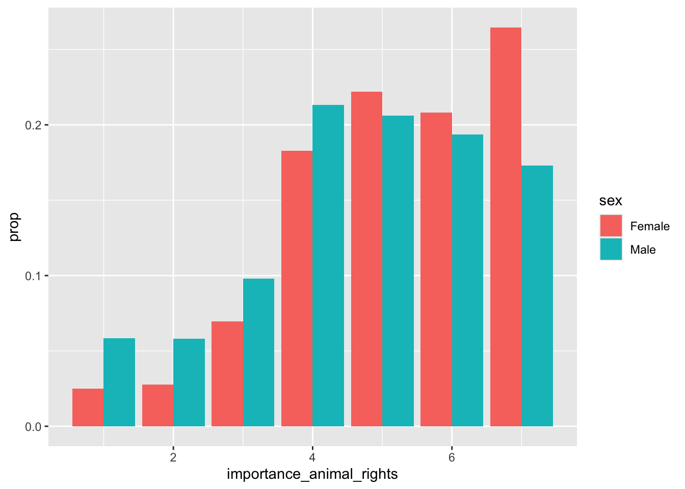
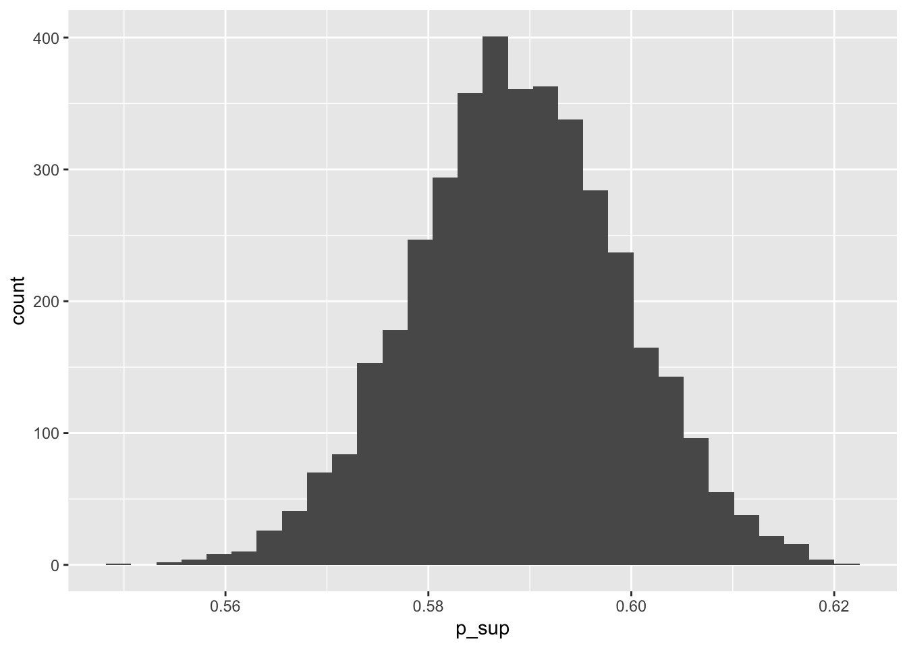

The output is a matrix with the results of a comparison between each element of a and b. For example, the result in row 1 and column 1 is TRUE, indicating that the first element of a (2) is larger than the first element of b (1). Another example, the result in row 1 column 2 is FALSE because the second element of b (2) is not larger than the first element of a (2), it’s a tie.
Next, we need to count the number of times that an element in a is larger than an element in b. This is easily done by using sum() on the matrix. This works because TRUEs are treated as 1 and FALSEs as 0.
Code
sum(outer(a, b, ">"))
[1] 15
It’s possible that two elements are tied (i.e., have the exact same value). To deal with this, we count the number of times this happens and divide the sum by 2, thereby saying that ties are treated as one value being larger than the other half the time.
Let’s turn this into a function and then compare the result to what we get when we use some ready-made functions from various packages.
Code
p_sup <-function(a, b) {# Count number of times a > b sum <-sum(outer(a, b, ">"))# Count ties, counting each tie as a half ties <-sum(outer(a, b, "==")) *0.5# Sum both and divide by total number of comparisons p_sup <- (sum + ties) / (length(a) *length(b))return(p_sup)}df <-cbind(c(a, b), c(rep("a", 5), rep("b", 5)))tribble(~package, ~code, ~p_sup,"-", "p_sup(a, b)", p_sup(a, b),"effectsize","p_superiority(a, b, parametric = FALSE)",p_superiority(a, b, parametric =FALSE)$p_superiority,"RProbSup", "A(df, 1, 2)", A(df, 1, 2)$A)
props <- data |>group_by(sex) |>count(importance_animal_rights) |>mutate(prop = n /sum(n))ggplot(props, aes(x = importance_animal_rights, y = prop, fill = sex)) +geom_col(position ="dodge")

Code
p_superiority(importance_animal_rights ~ sex, data = data, parametric =FALSE)$p_superiority
[1] 0.5849741
Code
p_sup(pull(filter(data, sex =="Female"), importance_animal_rights),pull(filter(data, sex =="Male"), importance_animal_rights))
[1] 0.5849741
A Bayesian example
Code
model <-brm( importance_animal_rights ~ sex,data = data, file ="model.Rds")draws <- data |>add_predicted_draws(model, value ="predicted_outcome")p_sups <- draws |>group_by(.draw) |>summarize(p_sup =p_superiority( predicted_outcome ~ sex,parametric =FALSE )$p_superiority )median_qi(p_sups, p_sup)
`stat_bin()` using `bins = 30`. Pick better value with `binwidth`.

Source Code
---title: "Probability of superiority"date: 2024-03-20categories: - statistics - effect size - probability of superioritycode-tools: truecode-fold: showdraft: true---Run the following setup code if you want to follow along.```{r}#| label: setup#| message: falselibrary(tidyverse)library(effectsize)library(RProbSup)library(brms)library(tidybayes)data <-read_csv("data.csv")data <-drop_na(data)options(mc.cores =4,brms.threads =4,brms.backend ="cmdstanr",brms.file_refit ="on_change")```## Manually calculating PSup```{r}#| label: manual-dataa <-c(2, 3, 4, 5, 6)b <-c(1, 2, 3, 4, 5)n <-length(a)``````{r}#| label: manual-outerouter(a, b, ">")```The output is a matrix with the results of a comparison between each element of `a` and `b`. For example, the result in row 1 and column 1 is `TRUE`, indicating that the first element of `a` (2) is larger than the first element of `b` (1). Another example, the result in row 1 column 2 is `FALSE` because the second element of `b` (2) is not larger than the first element of `a` (2), it's a tie.Next, we need to count the number of times that an element in `a` is larger than an element in `b`. This is easily done by using `sum()` on the matrix. This works because `TRUE`s are treated as 1 and `FALSE`s as 0.```{r}#| label: manual-sumsum(outer(a, b, ">"))```It's possible that two elements are tied (i.e., have the exact same value). To deal with this, we count the number of times this happens and divide the sum by 2, thereby saying that ties are treated as one value being larger than the other half the time.Both of the sums are summed together, giving us:```{r}#| label: manual-sums(sum(outer(a, b, ">")) +0.5*sum(outer(a, b, "==")))```This is actually the same thing as the Wilcoxon (or Mann-Whitney) test statistic.```{r}#| label: manual-wilcox#| warning: falsewilcox.test(a, b)```Dividing this number by the total number of comparisons gives us the probability of superiority.```{r}#| label: manual-p-sup(sum(outer(a, b, ">")) +0.5*sum(outer(a, b, "=="))) / (n * n)```Let's turn this into a function and then compare the result to what we get when we use some ready-made functions from various packages.```{r}#| label: manual-comparisonp_sup <-function(a, b) {# Count number of times a > b sum <-sum(outer(a, b, ">"))# Count ties, counting each tie as a half ties <-sum(outer(a, b, "==")) *0.5# Sum both and divide by total number of comparisons p_sup <- (sum + ties) / (length(a) *length(b))return(p_sup)}df <-cbind(c(a, b), c(rep("a", 5), rep("b", 5)))tribble(~package, ~code, ~p_sup,"-", "p_sup(a, b)", p_sup(a, b),"effectsize","p_superiority(a, b, parametric = FALSE)",p_superiority(a, b, parametric =FALSE)$p_superiority,"RProbSup", "A(df, 1, 2)", A(df, 1, 2)$A)```## A Frequentist example```{r}props <- data |>group_by(sex) |>count(importance_animal_rights) |>mutate(prop = n /sum(n))ggplot(props, aes(x = importance_animal_rights, y = prop, fill = sex)) +geom_col(position ="dodge")p_superiority(importance_animal_rights ~ sex, data = data, parametric =FALSE)$p_superiorityp_sup(pull(filter(data, sex =="Female"), importance_animal_rights),pull(filter(data, sex =="Male"), importance_animal_rights))```## A Bayesian example```{r}model <-brm( importance_animal_rights ~ sex,data = data, file ="model.Rds")draws <- data |>add_predicted_draws(model, value ="predicted_outcome")p_sups <- draws |>group_by(.draw) |>summarize(p_sup =p_superiority( predicted_outcome ~ sex,parametric =FALSE )$p_superiority )median_qi(p_sups, p_sup)ggplot(p_sups, aes(x = p_sup)) +geom_histogram()```